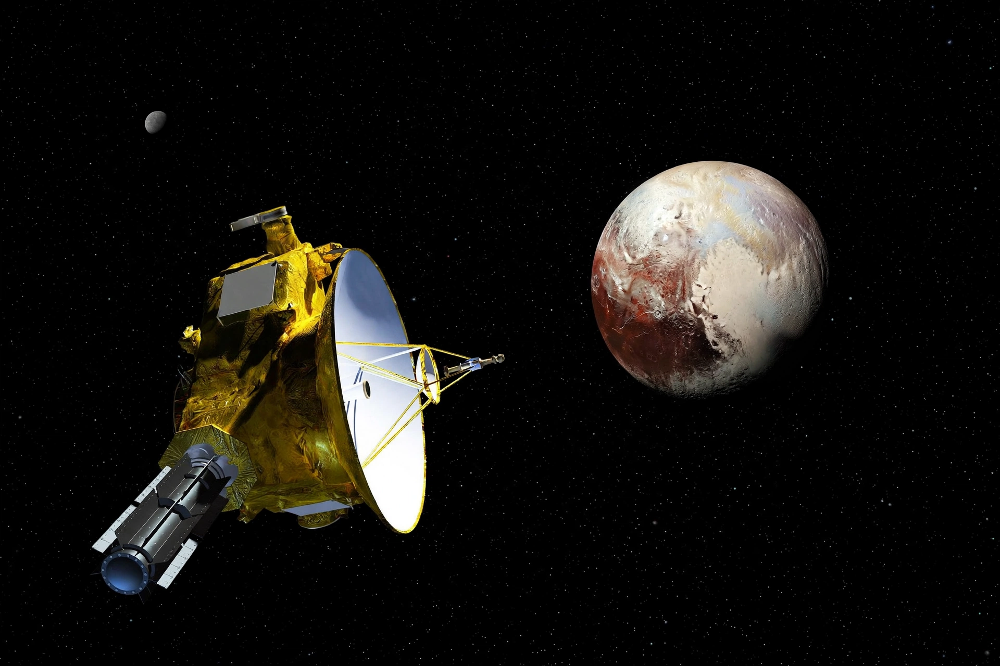

New Horizons

[Image: Artist's impression of the New Horizons spacecraft approaching Pluto and Charon]
New Horizons is a NASA space probe launched in 2006 as the first mission of the New Frontiers programme. It performed the first reconnaissance of the dwarf planet Pluto in July 2015, and in 2019 flew past the Kuiper Belt object Arrokoth — the most distant object ever visited by a spacecraft at that time.
Pluto flyby
After a nine-and-a-half-year journey, New Horizons passed about 12,500 km from Pluto's surface on 14 July 2015. It revealed nitrogen glaciers (including the vast Sputnik Planitia), water-ice mountains, a thin nitrogen atmosphere and a surprisingly youthful surface, and imaged Pluto's large moon Charon and its smaller moons.
Kuiper Belt mission
On 1 January 2019 the probe flew past Arrokoth, a contact-binary object about 36 km long in the Kuiper Belt, more than 6 billion km from Earth. The spacecraft continued outward, studying other distant objects and the heliosphere, with power from its radioisotope generator expected to last into the 2030s.